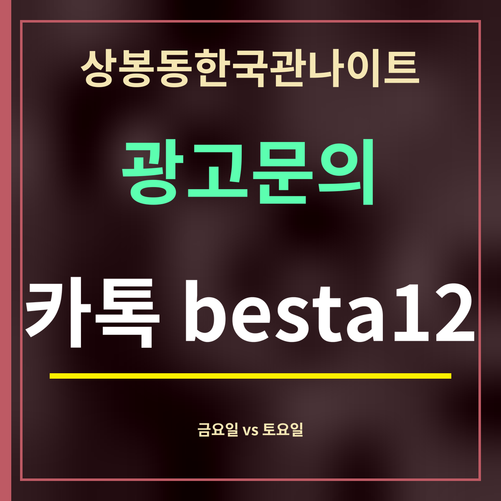

상봉동한국관나이트 금요일 vs 토요일, 자정 뒤가 다르다
제휴 없는 정보 안내 · 숫자는 카카오맵이 이 장소에 보여 주는 시간대별 방문 지표(2026년 9월 27일 확인)입니다. 실제 입장 인원이 아니라 견주기용 상대 지표입니다. 자정 넘은 시각은 다음 날 칸의 값입니다.

핵심 3줄: 밤 10시는 금요일 13,119 · 토요일 13,929로 비슷합니다. 자정(0시)이 되면 금요일 밤은 10,228로 내려가지만, 토요일 밤은 13,286로 거의 그대로입니다. 저녁 6시~새벽 5시를 더하면 토요일 밤이 금요일 밤보다 9,870 많습니다.
시각별로 나란히
| 시각 | 금요일 밤 | 토요일 밤 |
|---|---|---|
| 18시 | 3,158 | 3,538 |
| 19시 | 4,360 | 4,227 |
| 20시 | 7,152 | 6,831 |
| 21시 | 10,966 | 12,498 |
| 22시 | 13,119 | 13,929 |
| 23시 | 12,256 | 13,203 |
| 0시 | 10,228 | 13,286 |
| 1시 | 8,204 | 9,472 |
| 2시 | 4,723 | 5,846 |
| 3시 | 2,520 | 3,000 |
| 4시 | 1,990 | 2,161 |
| 5시 | 1,147 | 1,702 |
| 합 | 79,823 | 89,693 |
숫자가 말해 주는 것
금요일 밤은 밤 10시에 가장 높고, 자정이 되면 밤 10시의 약 78% 수준으로 내려갑니다. 토요일 밤은 자정에도 밤 10시의 약 95% 수준을 지킵니다. 다음 날이 쉬는 날이라 늦게까지 머무는 흐름으로 읽을 수 있습니다.
그래서 상봉동한국관나이트에서 붐비는 분위기를 오래 즐기려면 토요일 밤이, 일찍 즐기고 일찍 돌아가려면 금요일 밤이 맞는 편입니다. 다만 이 숫자는 평균적인 경향일 뿐이라, 날씨나 명절 같은 사정에 따라 그날은 다를 수 있습니다.
자주 묻는 것
금요일과 토요일 중 언제가 더 붐비나요?
밤 10시는 금요일 13,119 · 토요일 13,929로 비슷하고, 자정 뒤로는 토요일 밤이 더 높습니다.
자정이 넘으면 어떻게 달라지나요?
0시에 금요일 밤은 10,228, 토요일 밤은 13,286입니다.
이 숫자는 사람 수인가요?
아닙니다. 카카오맵이 보여 주는 상대 지표라 시간대끼리 견주는 데만 씁니다.
한 줄 정리: 상봉동한국관나이트는 밤 10시엔 금·토가 비슷하고, 자정 뒤로는 토요일 밤이 오래 갑니다.
요일 전체 표는 몇 시에 붐빌까에 있습니다.